Альт Линукс: Основные настройки
Безумие Морского Котика 🐱
Введение
Документация по автоматизации развертывания и обслуживания Альт Линукс СП Рабочая станция. Все команды протестированы на стабильной ветке c10f2.
Система ALT SP Workstation 11100-01 на дату 22.04.2026 имеет версию ядра:
6.12.74-6.12-alt0.c10f.2
Важная информация и отказ от ответственности
Данный проект, включая все предоставленные скрипты, инструкции и конфигурационные файлы, носит исключительно ознакомительный и образовательный характер.
Используя эти материалы, вы соглашаетесь со следующими условиями:
- Отсутствие гарантий: Все материалы предоставляются по принципу «как есть» (as is), без каких-либо явных или подразумеваемых гарантий их работоспособности, безопасности или пригодности для конкретных целей.
- Ваша ответственность: Вы принимаете на себя полную и единоличную ответственность за любые действия, выполняемые данными скриптами в вашей системе. Авторы проекта не несут ответственности за любой прямой или косвенный ущерб, включая потерю данных, сбои в работе оборудования, нарушение функциональности ОС или необходимость переустановки системы.
- Правила безопасности: Перед запуском любых автоматизированных сценариев настоятельно рекомендуется:
- Внимательно изучить исходный код скриптов.
- Создать резервную копию (бэкап) всех важных данных и конфигурационных файлов.
- Протестировать работу скриптов в изолированной среде (например, в виртуальной машине), а не на рабочей (production) системе.
- Независимость проекта: Данный проект является независимой инициативой сообщества. Он не аффилирован, не одобрен и не спонсируется компанией «Базальт СПО» (BaseALT) или командой разработчиков ОС «Альт» (ALT Linux). Все упомянутые торговые марки и названия продуктов являются собственностью их правообладателей. Мы не гарантируем совместимость скриптов со всеми версиями и редакциями «Альт Линукс».
Автоматизация — мощный инструмент, требующий осознанного подхода. Если вы не понимаете, что делает конкретная команда, не запускайте её.
Дистрибутивы
Все необходимые .iso, .rpm и архивы собраны в отдельных директориях: dist и iso на Яндекс Диске.
📁 Перейти на Яндекс Диск для скачивания dist 📁 Перейти на Яндекс Диск для скачивания isoУстановка Альт СП 10 Рабочая станция
Установка
Выберите: Установить ALT SP Workstation

Выберите профиль: Вручную

Удалите старые разделы

Рекомендуемая схема разметки диска для Linux
| Точка монтирования | Тип раздела | Рекомендуемый размер | Назначение |
|---|---|---|---|
| /boot/efi | FAT32 | 512 МБ | Хранение ядра ОС, образов initramfs, конфигурации загрузчика (GRUB). Содержит файлы, необходимые для начальной загрузки системы. |
| swap | Swap area | 8192 МБ (или 1–2× объёма ОЗУ) | Пространство подкачки для расширения виртуальной памяти. Используется при нехватке оперативной памяти, а также для гибернации (hibernate). |
| / (root) | Ext2/3/4 | 100–150 ГБ | Корневая файловая система: содержит системные библиотеки, утилиты, установленные пакеты, конфигурационные файлы (/etc, /usr, /var, /opt). Рекомендуется выделять с запасом для будущих обновлений и ПО. |
| /home | Ext2/3/4 | Оставшееся место | Персональные данные пользователей: документы, загрузки, настройки приложений, профили. Отделение от / упрощает переустановку системы без потери пользовательских данных. |
Создание раздела для микропрограммы UEFI
При установке в режиме UEFI обязательно создайте раздел EFI размером 512 МБ, файловая система FAT32, точка монтирования /boot/efi. В противном случае система не загрузится. Если используется режим Legacy(BIOS), то создавать EFI-раздел не нужно. Чтобы понять какая микропрограмма стоит достаточно раскрыть список "Тип раздела" при создании раздела, если в списке есть "efi system partition", значит UEFI, если только "FAT32", значит Legacy(BIOS).
1. Создание раздела efi


2. Создание раздела swap
Обязательно создайте раздел для Swap (подкачка) хотя бы 8Гб. В некоторых ситуациях отсутствие swap может привести к "тормозам", даже если ОЗУ свободно.


3. Создание основного раздела /


Создание разделов для микропрограммы Legacy(BIOS)
1. Создание раздела swap
Обязательно создайте раздел для Swap (подкачка) хотя бы 8Гб. В некоторых ситуациях отсутствие swap может привести к "тормозам", даже если ОЗУ свободно.


2. Создание основного раздела /


Далее. Загрузитесь с жесткого диска.
После загрузки с жесткого диска.
Снять галочку "Установить или сбросить пароль"

Настройте сеть

Задайте пароль root

Создайте учетную запись пользователя


После установки
Удалить атрибут noexec в /etc/fstab с /tmp и /home
Если раздел /home отдельно не создавался при разметке диска, то его и не будет в fstab
В редакторе vim для входа в режим ввода нажмите: i или a или o
i - ввод до курсора; a - ввод после курсора; o - ввод с новой строки
Для сохранения и выхода войдите в режим команды нажав Esc затем наберите: :wq
Затем нажмите Enter
Примените настройки fstab (можно просто сделать reboot)
Для СП фиксация для исключения деградации
Раскомментируйте три репозитория "rpm [cert8] http:..."
Vim
Vim: рабочие режимы, хоткейсы и команды
Управление пользователями
Чтобы удалить из группы wheel пользователя user1 наберите: gpasswd -d user1 wheel
sudo
Установка и настройка sudo:
Подготовка altlinux
Установка ydiskarc
Чтобы подготовить все пакеты и инструкцию, их надо скачать на ваш компьютер, для этого будет использовать ydiskarc.
Для работы ydiskarc будет использоваться Python3, т.к. Яндекс Диск не предоставляет прямых ссылок для скачивания
Установите pip3 (стандартная система управления пакетами для Python3)
Установите модель ydiskarc для скачивания с Яндекс Диска:
Чтобы все приложения, в том числе и ydiskarc, из ~/.local/bin запускать без указания путей, выполните:
Скачать Все
Для удобства скачайте дистрибутивы, скрипты и инструкцию в домашнюю директорию ~/
Пакет весит 1.7 Гб. Яндекс диск не предоставляет широкий канал для скачивания. Процесс скачивания займет около 40 минут, что достаточно долго.
Я рекомендую ограничиться установкой ydiskarc и не качать все пакеты, а по необходимости докачивать только необходимые пакеты, в каждой главе будет пометка для скачивания.
Также рекомендую скачать Скрипты и Инструкцию (описано ниже). Скачивание мгновенное, т.к. скачивание идет с github и сам объем не превышает 10 Мб.
Скачайте altlinux в домашнюю папку ~/
Скачать только Скрипты и Инструкцию
Для скачивания только скриптов и инструкции выполните:
Идеально подходит для обновления скриптов, т.к. скрипты меняются часто, а дистрибутивы редко.
Обновление Альт СП релиз 10 до версии 10.2
Автоматическое обновление
Для простоты обновления был написан bash скрипт update-kernel_10.2.sh. Данный скрипт выполняет все действия, которые описаны в нижестоящих главах, а именно: переход на ветку c10f2, обновление ядра и проверка с фиксацией. Путь до скрипта: altlinux/dist/update_kernel/update_kernel_10.2.sh
Скачайте скрипты и инструкцию:
Запустите скрипт автоматического обновления:
Если скрипт выполнился успешно, то никаких других действий по переходу выполнять не надо.
Атрибут -y отвечает на все вопросы, корме install kernel, Да: ./update_kernel_10.2.sh -y
Актуализация текущей пакетной базы
Закомментировать диск с установщиком Альта в fstab, иначе без установочного диска будет ошибка при обновлении дистрибутивов
Закомментировать диск с установщиком Альта в source.list
Раскомментировать репозитории. Раскомментировать/добавить три строчки. Если почему-то репозитории по http подвисают, то использовать по ftp
Выполните обновление системы
Если файловая система защищена от изменений механизмом IMA/EVM, отключите его. Для этого запустите от имени root команду integrity-remover, после чего система будет перезагружена.
Обновление до версии 10.2
Переключите бранч на 10.2
Снова внесите изменения в файл /etc/apt/sources.list.d/altsp.list и другие источники APT. Добавить c10f2
Чтобы проверить, используется ли integalert используйте команду: systemctl is-enabled integalert
При наличии каталога /etc/osec, переместите куда-нибудь файлы настройки старого сканера проверки целостности на основе OSEC (используется утилитой integalert)
Обновите индексы для нового источника и систему, затем обновите ядро. Убедиться, что ядро обновилось выполнив uname -r до update-kernel и после reboot
Перезагрузитесь
Если в процессе выполнения первых трёх команд возникнут сообщения про несовпадение размера пакета или контрольных сумм, повторите команды, начиная с apt-get update.
update-kernel ищет обновление только к конкретной версии ядра. Если вышла другая серия, к примеру, стоит un-def, а вышла std-def (просто kernel-image), то в update-kernel надо указывать конкретное ядро.
Проверить можно командой: update-kernel -l
Должно быть: * (36 d) kernel-image-6.12-6.12.74-alt0.c10f.2 [default]
Следующий пункт выполнять только если ядро не обновилось из-за разных серий (un-def, std-def - просто kernel-image)
После перезагрузки
Зафиксируйте новое состояние системы для корректной работы сканера проверки целостности на основе OSEC, если он использовался ранее и при перезагрузке компьютера выводилось сообщение о возможном нарушении целостности
Внимание! Если перед обновлением файловая система была защищена от изменений механизмом IMA/EVM, включите его обратно при помощи утилиты integrity-applier
После обновления ядра перестает работать virtualbox, т.к. под каждое ядро надо пересобирать ядро для виртуальных машин. Проще переустановить виртуальную машину
Установка темы "Windows"
Тема "Windows" улучшает стандартное оформление.
Установка. Пакет необходимо установить до создания пользователя, затем создать пользователя.
Если требуется установить тему под текущим пользователем, то необходимо выполнить сброс настроек темы от имени пользователя:
Окружение Xfce4
После обновления до с10f2 обновляется окружение MATE до 1.26.1, у которой наблюдаются проблемы с дочерними окнами,
они открываются за главным окном "_NET_ACTIVE_WINDOW message with a timestamp of 0".
Приложение пытается активировать своё окно через стандартный X11-протокол, но не передаёт корректный таймстамп
(временную метку последнего пользовательского события — клика, нажатия клавиши). По стандарту EWMH таймстамп не может быть 0
"meta_window_activate called by a pager with a 0 timestamp".
Marco (как и его «родитель» Mutter из GNOME) игнорирует такие запросы — это защита от «фокус-хищений»
(когда вредоносное приложение могло бы принудительно перехватывать фокус ввода).
Из-за игнорирования запроса активации всплывающее окно (диалог загрузки, файловый менеджер) не поднимается поверх родительского окна —
остаётся в фоне. Чтобы решить данную проблему, проще перейти на другое окружение, например Xfce4.
Установка окружения Xfce4
Выйдите из сессии и при входе выберите сессию Xfce: на экране входа в систему (где вы вводите пароль) найдите значок шестеренки или меню сессий (обычно в углу экрана), нажмите на него и выберите «Сеанс Xfce».

Если ранее был установлен Автоматический вход в систему, то обязательно отключите его перед переключение в сессию Xfce, иначе будет ошибка: XFCE PolicyKit Agent: An authentication agent already exists for the given subject
Центр управления системой -> Режим эксперта -> Локальные учётные записи -> Выбрать пользователя -> Снять галочку Автоматический вход в систему
Ссылка на ALT Linux Wiki Alterator-users
Настройка темы
Выберите и установите одну из трех тем: Светлую, Темную или Windows 10
Светлая тема
Темная тема
Тема Windows 10
Отключить звуковой сигнал встроенного динамика
Команда xset b off отключает уведомления встроенного динамика, но работает до перезагрузки.
Чтобы работало постоянно, надо добавить ее в автозапуск (Сеансы и запуск).
Обратите внимание, что когда копируете команды нажатием кнопки "копировать",
то в последней строке автоматически добавляется перевод строки. Удалите его, когда будете вставлять команду xset b off в Автозапуск.

Обои
Для скачивания установите ydiskarc, см. раздел Установка ydiskarc
Скачайте обои
Список билетов Kerberos
Сообщение об ошибке связано с Kerberos — системой сетевой аутентификации, которая часто используется при подключении компьютера к домену Active Directory (AD).
Сетевые папки
Подготовка
Убедитесь что пакеты samba и cifs установлены
Выберите один из вариантов подключения к сетевым ресурсам.
Вариант 2. Монтированние по запросу к сетевому ресурсу по протоколы cifs в fstab
Создать папки для монтирования
Создать ссылку на Рабочий стол для удобства
Чтобы дать сетевой доступ для префикса wine:
mkdir ~/.wine/dosdevices/unc/192.168.205.4
ln -s /mnt/share ~/.wine/dosdevices/unc/192.168.205.4/share
Создать файл с логином и паролем, которые будут использоваться при подключении к сетевой папке
Если подключаетесь как гость (Доступ Все), то в /root/.cifsmnt указывать guest и пустой пароль:
username=guest
password=
Также для подключения как гость убедитесь, что на сервере под Windows активна учетная запись Гость и в политике "secpol.msc" - "Локальные политики" - "Назначение прав пользователя" - "Отказывать в доступе к этому компьютеру из сети" - Не должно быть учетной записи Гость
Если в имени сетевого пути или директории для монтирования есть пробелы, то замените их на \040. Например: //192.168.205.4/Общая\040папка /mnt/Общая\040папка cifs ...
Если в вашей сети не настроен DNS-сервер или не работает mDNS, то подключиться к устройству, которое работает под Альт Линуксом, по его имени не получится. В этом случае используйте вместо имени его IP-адрес
Загрузка через /etc/fstab
Активируйте автомонтирования (можно просто сделать reboot)
Если точка монтирования содержит кириллические символы (например, /mnt/Общая папка), то запуск соответствующего юнита systemd через systemctl start затруднён. Systemd преобразует кириллицу в экранированные последовательности вроде \x20, и имя юнита приходится угадывать.
Проще перезагрузить ОС:
reboot
Готово!
Разбор строки в fstab c монтирование по протоколу cifs
//192.168.205.4/share /mnt/share cifs noauto,x-systemd.automount,x-systemd.idle-timeout=60,_netdev,rw,credentials=/root/.cifsmnt,nobrl,soft,file_mode=0777,dir_mode=0777,nofail 0 0
1. Что монтируем и куда
//192.168.205.4/share - сетевая папка к которой хотите получить доступ. Можно указывать и сетевые имена вместо ip если сервер под Windows, то если сервер под Линуксом, но надо настроить DNS перед тем как использовать сетевое имя сервера.
/mnt/share - точка монтирования (локальная папка, в которой будет доступна шара. (Должна существовать)).
cifs - Common Internet File System — протокол для доступа к Windows-шарам (SMB).
2. Основные параметры (опции)
Параметр Объяснение
noauto - не монтировать автоматически при загрузке (только по явной команде mount или по требованию). Если удалить noauto и x-systemd.automount то шара будет монтироваться сразу при старте ОС
x-systemd.automount - в паре с noauto - при первом обращении к /mnt/share система сама выполнит монтирование «на лету». Экономит ресурсы и не ждет сети.
x-systemd.idle-timeout=60 - отмонтировать через 60 секунд бездействия
_netdev - говорит системе, что это сетевое устройство. При загрузке монтировать только после поднятия сети (важно для CIFS/NFS).
rw - монтировать в режиме чтения и записи (Read-Write).
nofail - если шара недоступна (например, нет сети), не прерывать загрузку системы и не вызывать ошибку.
Дополнительные параметры, которые можно указать
vers=1.0 - использовать smb1 (полезно для старых систем, но небезопасно)
vers=2.0 - использовать smb2
vers=3.0 - использовать smb3, если не писать vers, то по умолчанию используется smb3
3. Доступ и права
credentials=/root/.cifsmnt - файл с логином/паролем для доступа к шаре (пример:
username=myuser
password=mypass
domain=MYDOM ) — безопаснее, чем пароль в открытом виде.
Для подключения как гость используйте:
username=guest
password=
nobrl - отключить блокировки байтов (byte-range locks). Помогает при работе некоторых баз данных (SQLite, MySQL) или при конфликтах с блокировками Windows.
soft - при ошибке соединения вернуть ошибку приложению (а не «виснуть» вечно, как hard). Программа сама решит, повторить попытку или нет.
file_mode=0777 - права доступа для файлов на шаре (все права — rwx для всех).
dir_mode=0777 - права доступа для папок на шаре (все права — rwx для всех).
⚠️ 0777 - широкие права. В production лучше ограничить (например, 0755 для папок, 0644 для файлов).
Дополнительные параметры, которые можно указать
Ограничить доступ к шаре
uid=500 - дать доступ к шаре только конкретному пользователю по его идентификатору (Узнать свой UID и GID можно командой: id)
gid=500 - дать доступ к шаре только конкретной группе по ее идентификатору (Узнать свой UID и GID можно командой: id)
file_mode=0700 - дать доступ к файлам только владельцу. Владелиц определяется по параметру uid и gid
dir_mode=0700 - дать доступ к папкам только владельцу. Владелиц определяется по параметру uid и gid
4. Поля для dump и fsck
0 - (пятое поле) Резервное копирование dump — выключено.
0 - (шестое поле) 0 Проверка fsck при загрузке — выключена (для сетевых ФС всегда 0).
Примеры альтернативных подключений:
Подключение по SMB1
//192.168.205.254/share /mnt/share cifs vers=1.0,noauto,x-systemd.automount,x-systemd.idle-timeout=60,_netdev,rw,credentials=/root/.cifsmnt,nobrl,soft,file_mode=0777,dir_mode=0777,nofail 0 0
Постоянное подключение (сетевая папка будет монтироваться сразу при старте ОС) (удалить noauto,x-systemd.automount). Для подключения без перезагрузки используйте: mount -a
//192.168.205.4/out /mnt/talsql/out cifs _netdev,rw,credentials=/root/.cifsmnt,nobrl,soft,file_mode=0777,dir_mode=0777,nofail 0 0
Подключить сетевую папку только для чтения (удалить file_mode=0777,dir_mode=0777)
//192.168.205.4/share /mnt/share cifs noauto,x-systemd.automount,x-systemd.idle-timeout=60,_netdev,rw,credentials=/root/.cifsmnt,nobrl,soft,nofail 0 0
Вариант 3. SMB1
Чтобы Samba могла работать по протоколу smb1 надо явно указать в /etc/samba/smb.conf протокол NT1
SMB1 (NT1) устарел и его использование небезопасно. Использовать только в крайнем случае, если требуется подключиться по Samba к Windows Server 2003 с smb1
Проверить подключение
Подключение через оконный проводник
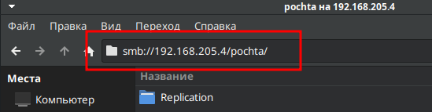
Вариант 4. Простое подключение сетевой папки через кнопку
Mate
ПКМ - "Создать кнопку запуска…" или "Создать значок запуска..." Тип: Расположение, Название: любое, Команда: smb://tal/trash

XFCE
ПКМ - Создать ссылку URL
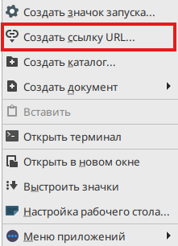
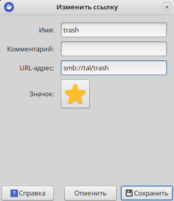
Или другой вариант
ПКМ - Создать значок запуска...
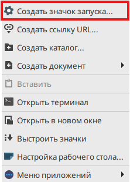
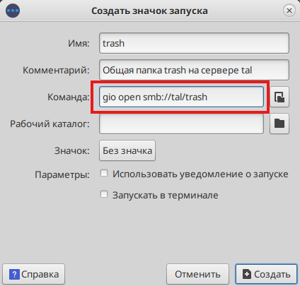
ПКМ по созданному значку - Свойства - Правка - Разрешить запуск этого файла в качестве программы
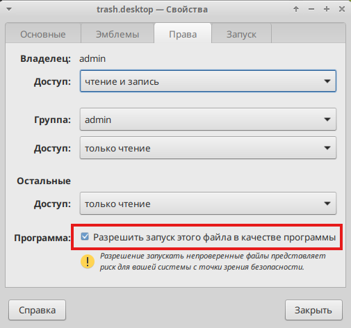
Вариант 4. Монтирование SSHFS
mDNS
mDNS — это протокол для автоматического разрешения имён в локальной сети без централизованного DNS-сервера. Работает по принципу «спросил соседей — получил ответ».
Проверка статуса
Теперь любые устройства в одной подсети, поддерживающие mDNS, будут доступны с суффиксом .local
Чтобы отключить демон avahi-daemon: sudo systemctl disable --now avahi-daemon
Проверка работы
Талисман-SQL
Автоматическая установка
Скачайте скрипты и инструкцию:
Для автоматической установки Талисмана-SQL сделайте скрипт исполняемым и запустите его:
instal_talsql.sh - это баш скрипт автоматической установки Талисмана SQL. Он выполнит все действия, которые описаны в ниже стоящих главах, а именно:
- Установка Wine и создание 32-х битного префикса .talsql;
- Установка дополнительных компонентов для префикса .talsql;
- Настройка сетевых папок (Автомонтирование по запросу через autofs);
- Установка Талисмана SQL (Reinstall_Tal3.1.52.exe);
- Копирования файлов из сетевой папки out в TalSQL для актуализации версии и настроек подключения к базе;
- Установка designfr (для просмотра выгруженных отчетов);
- Установка BDE (требуется для импорта питания из Талисмана 2.0).
Для монтирования сетевых папок Талисмана-SQL вам будет предложено ввести IP адрес или сетевое имя сервера, логин и пароль для подключения. Скрипт попытается найти сетевые папки: Talisman-SQL out pochta strah. Если их нет или вы нажмете "n" в момент подтверждения выбранных сетевых папок, то скрипт предложит выбрать самостоятельно имена через ввод цифр (выбрать можно несколько папок через запитую, например: 1,3,4).
В установщике Талисмана-SQL указывайте путь: C:\Talisman_SQL
Используйте атрибут -y, чтобы ответить положительно на все вопросы: ./install_talsql.sh -y
Обратите внимание, что атрибут -y не избавит вас от необходимости нажимать Далее в диалоговых окнах и ввода данных для сетевого подключения к расшаренным папкам сервера Талисмана-SQL.
Запустите без атрибута -y, чтобы отвечать самостоятельно: ./install_talsql
Лог файл: /var/log/install_talsql_дата_время.log
Архив конфигов autofs: /root/backup_t
Установка Wine
Проверить что репозитории добавлены
Для обновленной системы 10.2 используйте репозиторий c10f2
Если система 10 не обновлялась, то используйте репозиторий c10f
Установите Wine
Создайте префикс
Обязательно создавайте 32-х битный префикс
Установите дополнительные компоненты
Чтобы проверить Версию Windows в настройка Wine: $ WINEPREFIX=~/.talsql winecfg
«Приложения» - «Установки по умолчанию» указать Версия Windows: «Windows 2008».
Установка Талисмана SQL
Установить Талисман SQL
Скопируйте файлы из out в TalSQL и скопируйте библиотеки midas.dll, gds32.dll и fbclient.dll в system32
Если ПК не сервер, то можно удалить Firebird

Установка designfr
Designfr требуется для того, чтобы открывались сохраненные печатные форма
Установка BDE
BDE требуется для импорта питания из Талисмана 2.0
Перезагрузите ПК
Проблема: дочерние окна открываются за главным окном
Проблема наблюдается на MATE 1.26.1 _NET_ACTIVE_WINDOW message with a timestamp of 0 Приложение пытается активировать своё окно через стандартный X11-протокол, но не передаёт корректный таймстамп (временную метку последнего пользовательского события - клика, нажатия клавиши). По стандарту EWMH таймстамп не может быть 0. meta_window_activate called by a pager with a 0 timestamp Marco (как и его «родитель» Mutter из GNOME) игнорирует такие запросы - это защита от «фокус-хищений» (когда вредоносное приложение могло бы принудительно перехватывать фокус ввода). Из-за игнорирования запроса активации всплывающее окно (диалог загрузки, файловый менеджер) не поднимается поверх родительского окна - остаётся в фоне. Решение: Перейти на другой окружение. Например Xfce4. Или если требуется оставить окружение MATE, то можно установить только оконный менеджер Xfwm4 без установки окружения Xfce4.
Вариант 1. Установка окружения Xfce4
Выйдите из сессии mate и выберите сессию XFCE при входе: на экране входа в систему (где вы вводите пароль) найдите значок шестеренки или меню сессий (обычно в углу экрана), нажмите на него и выберите «Сеанс Xfce».
Вариант 2. Установка только оконного менеджера Xfwm4
Необязательно. Смена темы.
Проблема: в печатной форме не отображается заголовок
Проблема в текстовом поле RichEdit. Для отображения текста этого поля в Wine требуются дополнительные библиотеки.
Библиотеки - Порядок загрузки для данных библиотек (сторонняя, встроенная)

Проблема: при печати съезжает текст на половину
Решение: при печати выбрать масштабировать.
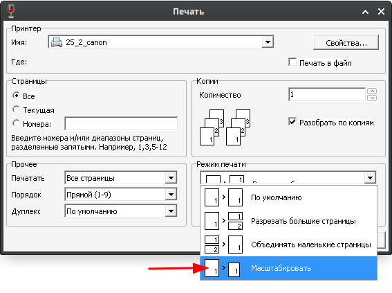
Талисман 2.0
Автоматическая установка
Скачайте скрипты и инструкцию:
Для автоматической установки Талисмана 2.0 сделайте скрипт исполняемым и запустите его:
Во время установки потребуется ввести MAC-адрес от сервера Талисмана 2.0
Чтобы узнать MAC-адрес, на сервере в cmd наберите: ipconfig /all
instal_tal2.0.sh - это баш скрипт автоматической установки Талисмана 2.0. Он выполнит все действия, которые описаны в ниже стоящих главах, а именно:
- Установка Wine и создание 32-х битного префикса .tal2.0;
- Установка дополнительных компонентов для префикса .tal2.0;
- Настройка сетевых папок (Автомонтирование по запросу через autofs);
- Установка Талисмана 2.0 и BDE;
Для монтирования сетевых папок Талисмана 2.0 производится через mount_share: вам будет предложено ввести IP адрес или сетевое имя сервера, логин и пароль для подключения.
В установщике Талисмана 2.0 указывайте путь: C:\5dll
Используйте атрибут -y, чтобы ответить положительно на все вопросы: ./install_tal2.0.sh -y
Обратите внимание, что атрибут -y не избавит вас от необходимости нажимать Далее в диалоговых окнах и ввода данных для сетевого подключения к расшаренным папкам сервера Талисмана 2.0.
Запустите без атрибута -y, чтобы отвечать самостоятельно: ./install_tal2.0.sh
Лог файл: ~/cache/tal2.0/install_tal2.0_дата_время.log
Архив конфигов autofs: /root/backup_t
Скачать
Для скачивания установите ydiskarc, см. раздел Установка ydiskarc
Скачайте Талисман 2.0
Для полноценной работы используйте виртуальную машину KVM. Для установки KVM см. раздел KVM
Настройка сетевых папок
Для простоты подключения к сетевой папке используйте: mount_share
Установить autofs:
Создайте директорию для монтирования
Настройте autofs для автоматического монтирования сетевых папок по запросу
Создайте конфигурационный файл:
Настройте подключение конфигурационного файла:
Запустите сервис:
Установка Wine
Установить Wine:
Создайте префикс
Обязательно создавайте 32-х битный префикс
Установите дополнительные компоненты
Настройка проверки лицензии
Т.к. проверка лицензии не работает через Wine, то придется ее обойти созданием копии mac адреса сервера Талисман 2.0 на виртуальном сетевом интерфейсе.
Получите MAC адрес с сервера, с которого был сделан запрос на ключ Талисман 2.0
Чтобы узнать MAC-адрес на сервере в cmd наберите: ipconfig /all
Создать виртуальный сетевой интерфейс для этого мак адреса
Чтобы удалить: nmcli connection delete "veth0"
Чтобы изменить:
nmcli connection modify "veth0" macvlan.parent enp0s8
nmcli connection modify "veth0" ipv4.addresses 192.168.20.50/24 ipv4.gateway 192.168.20.1
nmcli connection modify "veth0" ethernet.cloned-mac-address 05:D0:51:CE:G9:56
nmcli connection down "veth0" && nmcli connection up "veth0"
Установка BDE и Талисмана 2.0
Установите BDE:
Установите Талисман 2.0:
Настройте BDE
В Талисмане 2.0 укажите путь до базы:
Диск Z:\ ссылается на корень /
Используйте его, чтобы указать путь до подключенной сетевой папки с базой Талисмана 2.0
Например: сетевую папку \\tal\talisman_all смонтировали /mnt/tal/talisman_all значит в Талисмане 2.0 путь надо указывать z:\mnt\tal\talisman_all
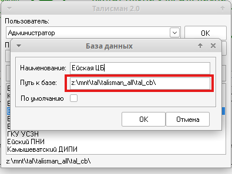
Принтер
Установка драйверов
Для скачивания установите ydiskarc, см. раздел Установка ydiskarc
Скачайте драйвера:
Перед добавление принтера установите драйвера
Для переупаковки пакета используйте: epm repack ./cnrdrvcups-ufr2-uk-6.20-1.20.x86_64.rpm
Установка драйверов на Canon, Kyocera и HP:
Проверка установленных пакетов: rpm -qa | grep cnrdrvcups
Подключение к сетевому принтеру


Если принтер поддерживает ipp, то лучше использовать его: ipp://192.168.205.12

Перечень драйверов:
| Название принтера | Название драйвера |
|---|---|
| HP LaserJet MFP M426fdn | LaserJet Pro MFP M426-M427 |
| Canon LBP223 | LBP223 |
| Canon i-SENSYS MF453dw | Generic - PCL 6 |
| Kyocera ECOSYS M2640idw | Kyocera ECOSYS M2640idw.PPD |
| Kyocera ECOSYS M5526cdn (Color) | Kyocera ECOSYS M5526cdn.PPD |


Итого

Подключение к принтеру, который расшарен на компьютере с ОС Windows
Используйте: smb://pc-3518/Pantum%20BM510
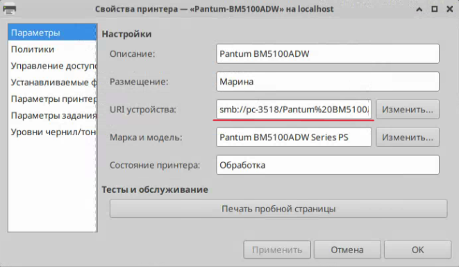
Если в сетевом пути есть пробелы, то обязательно заменить их на
Сканер
Автоматическая установка
Автор: Евгений Гринь (Незнайка)
scanner-wizard.sh
Автоматическая установка драйверов. Проверяет доступность репозиториев и сама устанавливает все необходимые пакеты для работы сканеров (SANE, AirScan, драйверы Epson, HP, сетевые утилиты). Настройка прав доступа. Добавляет текущего пользователя в системные группы (lp и scanner), чтобы обычные программы могли получать доступ к USB-устройствам без ошибок. Поиск устройств. Сканирует подключенные USB-сканеры и ищет сетевые/Wi-Fi МФУ в локальной сети (используя Avahi и AirScan). Диагностика и тест. Не просто ищет устройства, но и проводит реальное тестовое сканирование в фоне, чтобы подтвердить, что сканер физически исправен и готов к работе. Отчетность и удобство. Формирует подробный технический отчёт (который можно сохранить в файл), показывает результат пользователю и предлагает сразу открыть приложение для сканирования (Simple Scan).
Что именно устанавливается:
- 1. Базовые компоненты SANE (ядро системы сканирования)
- sane-backends (libsane) — базовая библиотека
- sane-frontends — консольные утилиты (scanimage)
- firmware-iscan — прошивки для некоторых сканеров
- 2. Для сетевых сканеров
- sane-airscan — драйвер для сканеров с поддержкой eSCL/WSD (современные МФУ)
- avahi — служба обнаружения устройств в сети (mDNS/Bonjour)
- 3. Для конкретных производителей
- epsonscan2 — драйверы для сканеров Epson
- imagescan-sane + iscan-free + iscan-data — альтернативные драйверы для Epson
- 4. Вспомогательные программы
- simple-scan — графическое приложение для сканирования (как в Windows)
- nmap — утилита для поиска сетевых устройств
- hplip — драйверы для HP (в вашем отчёте не устанавливался, т.к. уже был)
Что НЕ устанавливается:
- Драйверы для Brother (brscan4, brscan5) — их нужно ставить отдельно
- Проприетарные драйверы для Canon (если не поддерживаются SANE)
- Драйверы для редких или очень старых сканеров
Скачайте пакет:
Установите пакет:
Запустите автоматическую установку сканера:
Программа для сканирования
tldr
Разработка получила название tldr – сокращение от Too Long;Didn’t Read (слишком длинно;не читал). Она сокращает справку к популярным утилитам, делая её более дружелюбной. Очень легко забыть, за что отвечают lsof или tar. И вызов помощника через man tar не очень-то упрощает жизнь.
tldr выделяет самую важную информацию из man-страниц и выводит ее на экран.
Установите pip:
Установите tldr через pip:
Пример использования:
МойОфис
Для скачивания установите ydiskarc, см. раздел Установка ydiskarc
Скачайте МойОфис
Установка МойОфис Текст, Таблица и Презентация:
Установка МойОфис Почта:
Исправление интерфейса. Если интерфейс отображается неправильно - окна панели наезжают друг на друга, но текст в них отображается нормально. Это происходит, потому что МойОфис неправильно выполняет масштабирования. Чаще всего это происходит на видеокартах Intel, так как для них используется драйвер i915.
Исправление масштабирования для всех пользователей.
Или для конкретного пользователя.
Если ярлык был создан на рабочем столе, то его надо удалить и создать заново, перетаскиванием иконки с меню на рабочей стол.
Теперь у пользователя будет запускаться МойОфис таблицы и текст с масштабированием 1.25, что растянет интерфейс до нормального. Если надо на всех пользователей так сделать, то редактировать файл .desktop надо в системной папке /user/share/applications, но этого не рекомендуют делать.
Wine
Установка
Создание префикса
Установка дополнительных компонентов
Основные команды.
В самом wine не работать под root, только под пользователем!
Microsoft Office 2010
Для скачивания установите ydiskarc, см. раздел Установка ydiskarc
Скачайте MS Office 2010
Установите Wine.
Создание префикса
Установите дополнительные компоненты
Смонтируйте ISO диск
Установите MS Office 2010
После первого запуска Word или Excel приложение будет проводить настройку и предложит вам перезагрузиться, нажмите Нет.
MS Office 2010 не будет открывать файлы по умолчанию, даже если вы сделает ассоциацию, чтобы обойти эту проблему скопируйте sh скрипты и ассоциируйте уже с ним, тогда файлы нормально будут открывать по двойному клику.
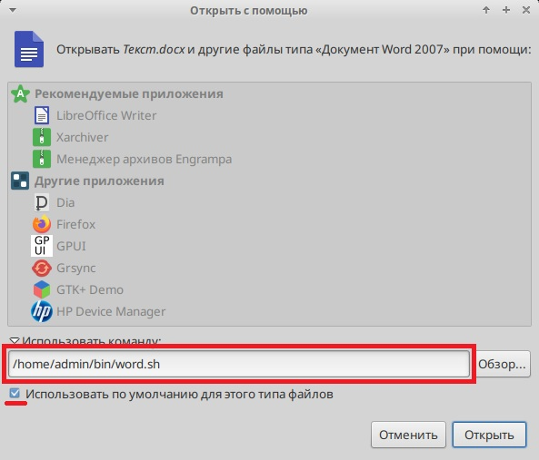
КриптоПро 5.0
Страница КриптоПро 5.0
Для скачивания установите ydiskarc, см. раздел Установка ydiskarc
Скачайте КриптоПро 5.0
Установка КриптоПро 5.0
Выберите все пакеты для установки, кроме lsb-cprocsp-kc2

Установка открытого сертификата
Откройте «Инструменты КриптоПро»;
Выберите вкладку «Сертификаты»;
Нажмите «Показать расширенные»;
Отметьте галкой «Отключить автовыбор хранилища (использовать текущее)».
Если галку не ставить, «КриптоПро» автоматически определит хранилище для сертификатов. Личные сертификаты попадут в хранилище «Другие пользователи»;

Выберите необходимое хранилище сертификатов из выпадающего меню;
Нажмите «Установить сертификаты»;

Выберите личный сертификат в месте хранения;
Нажмите «Открыть»

После закрытия окна на вкладке отобразится строка с установленным сертификатом.
Проверить наличие сертификата можно в «КриптоПро»:
Откройте «Инструменты КриптоПро»;
Выберите вкладку «Сертификаты»;
Выберите хранилище «Личное» из выпадающего меню.

Установка корневого сертификата
Откройте «Инструменты КриптоПро»;
Нажмите «Показать расширенные»;

Отметьте галкой «Отключить автовыбор хранилища (использовать текущее)»;
В выпадающем меню выберите «Доверенные корневые центры сертификации»

Нажмите «Установить сертификаты»;
В открывшемся меню найдите файл сертификата центра сертификации;
Нажмите «Открыть»;
Может появиться сообщение-предупреждение о том, что установка корневых сертификатов несет риск безопасности, нажмите «ОК»;
Внизу окна появится сообщение «Установка завершена». Если его развернуть, появится информация о совершенном действии

Привязать и положить открытый сертификат в контейнер
Удаленный доступ
Ассистент
Установка Ассистента через epm
Установка Ассистента через rpm
Если через epm не удалось установить, то установите rpm пакет
RDP
RDP клиент
ssh
SSH (Secure SHell - защищенная оболочка) — сетевой протокол прикладного уровня, предназначенный для безопасного удаленного доступа к UNIX-системам.
Установка сервера ssh
Подключение по ssh. Удаленный пользователь должен входить в группу wheel и это не должен быть root.
Атрибут -X нужен для запуска графических интерфейсов.
RMS
RMS - удаленный доступ
Чтобы отключить доступ через интернет, надо создать несуществующий сервер и выбрать его:
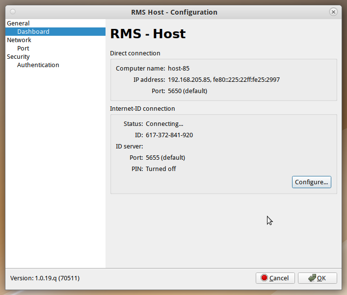
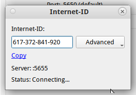
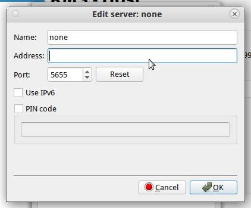
Установка шрифта TimesNewRoman
Для системы
Для Wine
Яндекс браузер
Установка
Chromium-Gost
Главная страница Chromium-gost: https://cryptopro.ru/products/chromium-gost
Прямая ссылка Chromium-gost: chromium-gost-146.0.7680.177-linux-amd64.rpm
Установка из репозитория
Плюсы: обновляется при apt-get dist-upgrade
Минусы: поставляется без плагинов, придется вручную устанавливать Плагин КриптоПро и Госплагин.
Установка из rpm
Плюсы: плагины уже встроены.
Минусы: обновлять вручную
Установка из eepm
Минусы: этот метод установки не работает(
Плагин КриптоПро
1. Установить Extension for CAdEs Browser Plugin: интернет-магазин chrome
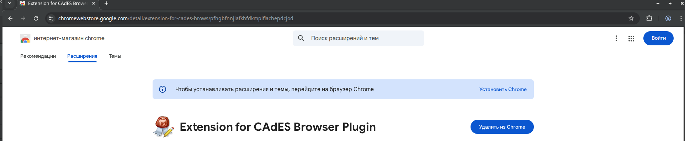
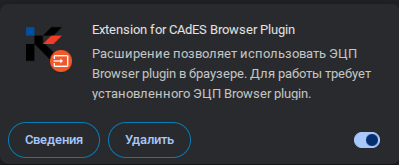
2. Установить Плагин CryptoPro Extension for Cades BrowserPlogin
Скачать Плагин CryptoPro Extension for Cades BrowserPlogin: Для версии 138.XXX и ниже
Перейти в chromiu-gost: chrome://extensions/
Включить режим разработчика
Загрузить распакованное расширение: iifchhfnnmpdbibifmljnfjhpififfog_main.crx
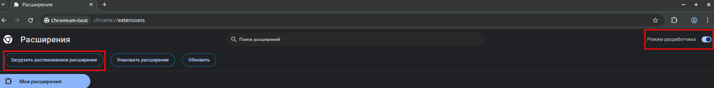
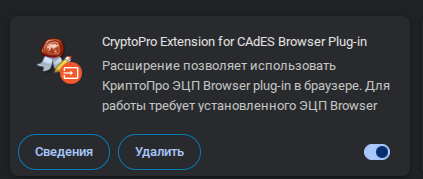
Отключить Режим разработчика
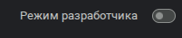
Госуслуги
Госплагин
Использовать только один плагин: Госплагин или Расширение для плагина Госуслуг.
Рекомендуется использовать Госплагин!
Установите Госплагин
Установите расширение Госплагин для браузера:
- Chromium-Gost или Яндекс Браузер
- FireFox
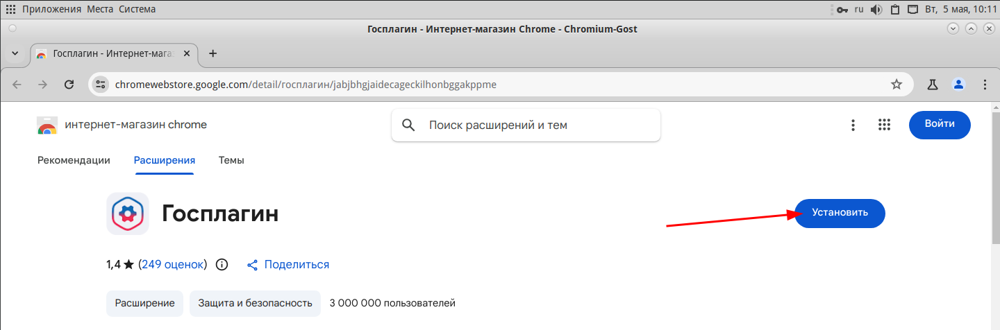
Расширение для плагина Госуслуги
ИсточникЕсли требуется именно "Расширение для плагина Госуслуги":
Отключить Госплагин, если он установлен!
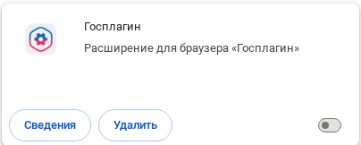
Установить пакеты для работы с токенами и смарт-картами
Скачать и установить плагин https://ds-plugin.gosuslugi.ru/plugin/upload/Index.spr
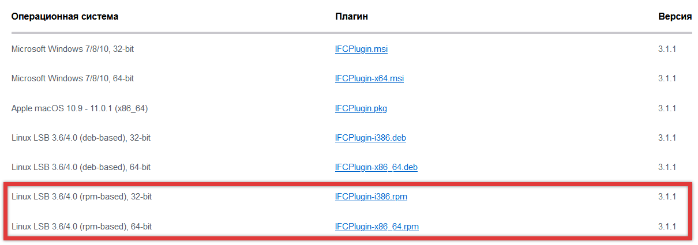
Установить браузерное расширение https://ds-plugin.gosuslugi.ru/plugin/upload/Index.spr
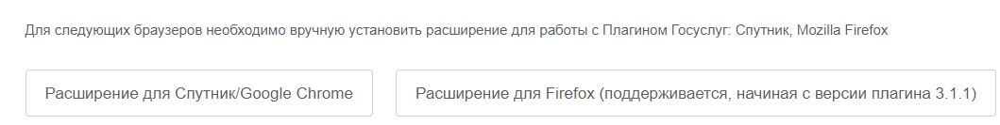
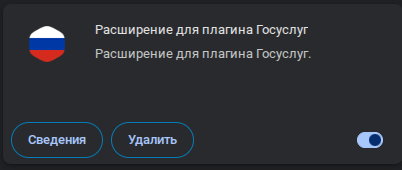
Настройка плагина Госуслуги
Для корректной работы плагина после установки необходимо выполнить дополнительные действия:
- Настроить конфигурационный файл. Чтобы не вносить изменения в него вручную, можно использовать готовый файл, предоставляемый КриптоПро.
Скаченный конфигурационный файл находится в altlinux/dist/gosuslugi/ifcx64.cfg
- Создать символическую ссылку на файл ru.rtlabs.ifcplugin.jso для браузеров Google Chrome, Chromium-Gost и Яндекс.Браузер.
- Установить криптопровайдер
См. раздел КриптоПро 5.0
Виртуализация
KVM
Установка
KVM (Kernel-based Virtual Machine) — программное решение, обеспечивающее виртуализацию в среде Linux на платформе x86, которая поддерживает аппаратную виртуализацию на базе Intel VT (Virtualization Technology) либо AMD SVM (Secure Virtual Machine).
Ниже представлена пошаговая инструкция по настройке виртуализации KVM/QEMU в ALT Linux с использованием libvirt и virt-manager:
Сеть
Важно обратить внимание, во избежание ошибки при запуске виртуальной машины "сеть «default» не активна" на настройку:
После создания виртуальной машины в virt-manager Правка ⇾ Свойства подключения ⇾ Вкладка Виртуальные сети ⇾ На сети default поставить галочку "Автозапуск: При загрузке" ⇾ Применить.
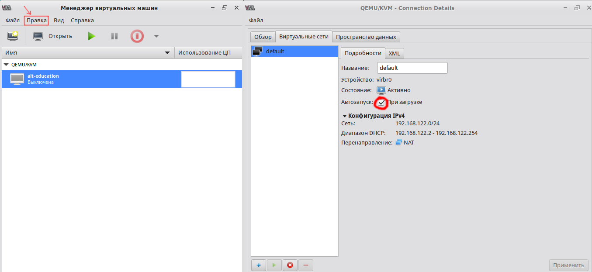
Для работы Талисмана 2.0 надо в настройках сети виртуальной машины указать Мост или Устройство macvtap
Чтобы узнать название сетевого устройства наберите: ip a
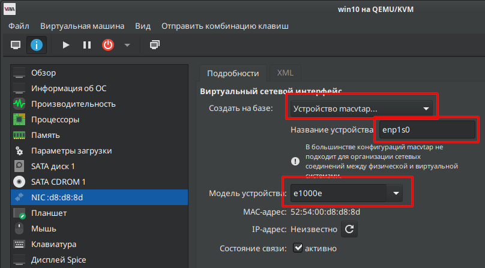
VirtualBox
Рекомендую использовать KVM вместо VirtualBox
После установки VirtualBox слетают драйвера на видеокарту и ломается логотип загрузки.
Установка
Сетевой мост
Катарсис
Установка
Если будете использовать скрипты sh из distr, проверьте, что установлено sudo и пользователь добавлен в группу wheel. Как это сделать см. раздел sudo. Скрипты запускать sudo ./скрипт.sh
Установка wine.
Есть скрипт для установки см. dist/katarsis/Install_Environment.sh
Создание префикса
Есть скрипт для установки компонентов см. dist/katarsis/Install_PK_AltLinux.sh
Установка компонентов
Распределение подразделений по установкам
- Группа Краснодар
http://192.168.23.51/spclient/SP.Client.application- УСЗН в Западном округе города Краснодара
- УСЗН в Карасунском округе города Краснодара
- УСЗН в Прикубанском внутригор. округе города Краснодара
- УСЗН в Центральном округе г. Краснодара
- Группа Сочи
http://192.168.23.59/spclient/SP.Client.application- УСЗН в Адлерском внутригор. районе города-курорта Сочи
- УСЗН в г. Новороссийске
- УСЗН в городе-курорте Анапа
- УСЗН в городе-курорте Геленджике
- УСЗН в Лазаревском внутригор. районе города-курорта Сочи
- УСЗН в Темрюкском районе
- УСЗН в Туапсинском районе
- УСЗН в Хостинском внутригор. районе города-курорта Сочи
- УСЗН в Центральном внутригор. районе города-курорта Сочи
- Группа 1
http://192.168.23.57/spclient/SP.Client.application- УСЗН в Белоглинском районе
- УСЗН в Брюховецком районе
- УСЗН в Выселковском районе
- УСЗН в Динском районе
- УСЗН в Кореновском районе
- УСЗН в Крыловском районе
- УСЗН в Кущевском районе
- УСЗН в Новопокровском районе
- УСЗН в Павловском районе
- УСЗН в Тимашевском районе
- УСЗН в Тихорецком районе
- Группа 2
http://192.168.23.58/spclient/SP.Client.application- УСЗН в Абинском районе
- УСЗН в Апшеронском районе
- УСЗН в городе Горячем Ключе
- УСЗН в Ейском районе
- УСЗН в Калининском районе
- УСЗН в Каневском районе
- УСЗН в Красноармейском районе
- УСЗН в Крымском районе
- УСЗН в Ленинградском районе
- УСЗН в Приморско-Ахтарском районе
- УСЗН в Северском районе
- УСЗН в Славянском районе
- УСЗН в Староминском районе
- УСЗН в Щербиновском районе
- Группа 3
http://192.168.23.56/spclient/SP.Client.application- УСЗН в Белореченском районе
- УСЗН в г.Армавире
- УСЗН в Гулькевичском районе
- УСЗН в Кавказском районе
- УСЗН в Курганинском районе
- УСЗН в Лабинском районе
- УСЗН в Мостовском районе
- УСЗН в Новокубанском районе
- УСЗН в Отрадненском районе
- УСЗН в Тбилисском районе
- УСЗН в Успенском районе
- УСЗН в Усть-Лабинском районе
Скачивание и установка Катарсиса
При скачивании в атрибуте команды wget указывать ip своей группы (см. Распределение подразделений по установкам)
Если ярлык Катарсиса по каким-либо причинам не создался на рабочем столе, то создаем его руками.
По умолчанию создается ссылка без префикса (Exec=wine...), но т.к. мы указывали префикс katarsis, то надо прописать в env полный путь до префикса (например, Exec=env WINEPREFIX=/home/admin/.katarsis wine...).
Так же заменить user1 на имя своей учетной записи.
Создание ярлыка. Укажите в GROUP номер своей группы
Проброс портов
Для проброса портов будет использовать socat
Установка
Установите socat
Прокси Сервер (компьютер с ViPNet)
Альт Линукс
Ниже приведен вареант Прокси Сервера на Альт Линуксе.
На компьютере с ViPNet создайте systemd юнит с запуском socad.
Предположим, что у этого компьютера ip 192.168.205.80, а у сервера, куда надо пересылать запросы, ip 192.168.23.58
Для удобства создайти переменные с параметрами перенаправления:
Создайте юнит с запуском socat:
Запустите юнит:
Windows
Ниже приведен вареант Прокси Сервера на Windows.
На компьютере с ViPNet создайте porproxy.bat в автозапуске win+r shell:startup
Предположим, что у этого компьютера ip 192.168.205.80, а у сервера, куда надо пересылать запросы, ip 192.168.23.58
Зачастую сброс правил (netsh interface portproxy reset) и создание bat файла в автозапуске необходимы, т.к. без него после перезагрузки правила перестают работать. Это происходит из-за бага ОС.
Клиент
На клиенте, в настроках приложения, где требуется проброс портов, указывайте Прокси сервер (ip компьютера с настроенным Проски Сервером)
В данном примере показанна настройка клиентской части Катарсиса.
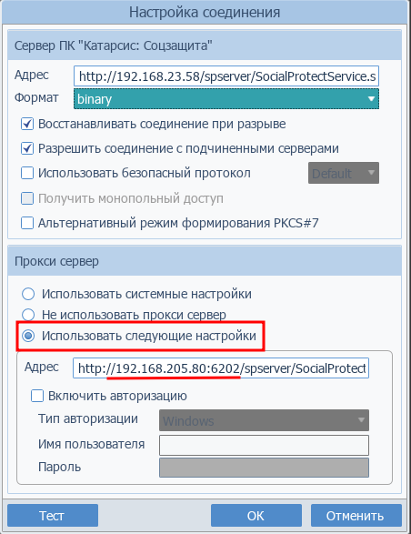
NotifyListener - уведомление о создании файлов
Клиентская часть
Клиентская часть notify_listener слушает порт 5555 и выводит сообщения полученные по этому порту
Скачайте скрипты и инструкцию:
Скопируйте notify_listener.py в директорию ~/bin
Создать демона для автозапуска
$USER будет заменен на имя текущего пользователя.
Управление и логи
Журнал уведомлений.
Работает только для оболочки XFCE
Серверная часть
Серверная часть: пока реализована только для ОС Windows, данный сервер отслеживает указанные директории и сообщает о их изменения по порту 5555.
Находится в dist\MailMonitor\Server\Windows\MailMonitorServer\MailMonitor.exe
Чтобы запустить его как сервис в ОС Windows, надо в cmd от пользователя администратор выполнить:
Локальный чат
LAN Messenger
Установка
Добавьте lan-messenger в атозапуск
Запуск LAN Messenger: win+r lan-messenger
Dr.Web
Установка через пакет
Если у вас дистрибутив ФСТЭК/ФСБ до устанавливать с поставляемого пакета, а не с репозитория.
Для скачивания установите ydiskarc, см. раздел Установка ydiskarc
Скачайте Dr.Web
Если после установки антивируса команда apt-get update начинает ругаться на дубликат gpg-pubkey, это значит, что после установки Dr.Web в системе появилось два gpg-pubkey, и apt-get будет выдавать предупреждение. Для решения надо добавить разрешение на дублирование gpg ключей.
Установка через репозиторий
Настройка исключений для SpIDer Guard и Gate
Для снижения нагрузки на ЦП добавьте исключения в сканер реального времени SpIDer Guard и для работы lan-messenger внисити его в исключение SpIDer Gate:
drweb-ctl cfshow linuxspider.excludedpath
drweb-ctl cfshow linuxgui.excludedpath
/proc /sys - должны быть и в исключениях проверки в реальном времени (linuxspider),
и в исключениях проверки при ручном запуске сканирования (linuxgui).
Эти два пути добавлены по умолчание. Если их нет, то добавьте:
drweb-ctl cfset linuxspider.excludedpath -a /proc
drweb-ctl cfset linuxgui.excludedpath -a /proc
drweb-ctl cfset linuxspider.excludedpath -a /sys
drweb-ctl cfset linuxgui.excludedpath -a /sys
drweb-ctl cfshow linuxfirewall.excludedproc
Должно быть
LinuxFirewall.ExcludedProc = /usr/sbin/NetworkManager
Если нет, то добавьте:
drweb-ctl cfset linuxfirewall.excludedproc -a /usr/sbin/NetworkManager
Включить Debug Log:
drweb-ctl cfset Root.log /var/log/drweb-debug.log
drweb-ctl cfset root.defaultloglevel DEBUG
Выключить Debug Log:
drweb-ctl cfset Root.Log -r
drweb-ctl cfset Root.DefaultLogLevel -r
Просмотреть лог
sudo pluma /var/log/drweb-debug.log
Ввести лицензию
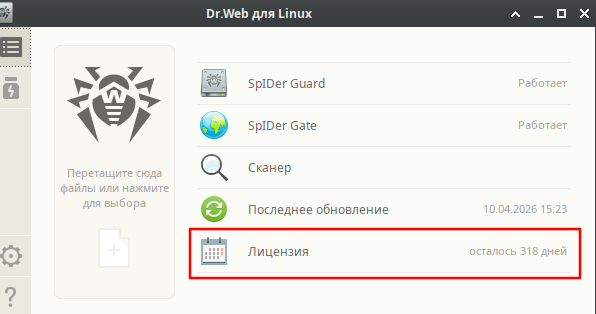
Налогоплательщик ЮЛ
Перейдите на сайт налоговой службы и скачайте инсталляционный файл Налогоплательщика ЮЛ: перейти
Перейдите на сайт налоговой службы и скачайте инсталляционный файл Tester: перейти
Установите Wine:
Создание 32-х битный префикса:
Установите дополнительные компоненты:
Скачайте и Установите Налогоплательщик ЮЛ:
Скачайте и Установите Tester:
Если Налогоплательщик используется в однопользовательском режиме, то установка завершена.
Для многопользовательского режима подключитесь к локальному серверу Налогоплательщика ЮЛ
Подключите расшаренную папку с Налогоплательщиком ЮЛ
Для простоты подключения к сетевой папке используйте: mount_share
Перед подключением сетевых папок проверти установлен ли autofs:
Создайте файл с логином и паролем, которые будут использоваться при подключении к сетевой папке
Создайте папку с именем сервера
Создайте конфигурационный файл
Настройте подключение конфигурационных файлов
Запустите сервис
Создайте ярлык на подключенный локальный сервер Налогоплательщика ЮЛ:
TimeShift
Timeshift — программа для автоматического периодического создания копий системы (снимков/snapshots).
Timeshift предназначен прежде всего для создания снимков системных файлов и настроек. Пользовательские данные по умолчанию не архивируются поэтому в случае сбоя системы, восстанавливаются системные файлы, а данные пользователей остаются в актуальном состоянии (конечно, если они не были повреждены).
Резервные копии не могут быть восстановлены на уровне отдельных файлов, восстановление всегда происходит в полном объеме настроек Timeshift.
Установка
TimeShift установлен по умполчанию в Альт Линукс СП 10 Рабочая станция
Создание снимков
Создать снимок вручную:
Снимки хранятся: /timeshift/snapshots/
Поставить задачу на автоматическое создание снимков ежемесячно:
Чтобы удалить снимок: timeshift --delete
Чтобы удалить расписание: jq '.schedule_monthly = false' /etc/timeshift/timeshift.json
Восстановление системы
Вариант 1. Система загружается
Если система загружается, то используйте терминал или графический режим timeshift-launcher
Вариант 2. Система не загружается
Если система не загружается, то используйте Rescue-диск:
Вставьте установочный диск и загрузитесь с Спасательного LiveCD.
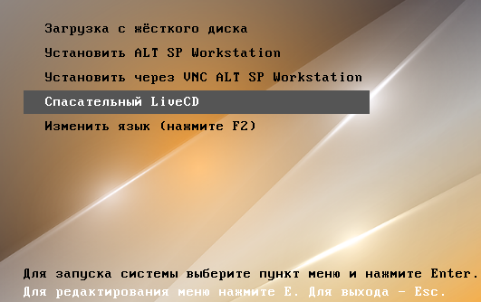
Список команд
- Просмотрите список дисков/разделов:
lsblk -f - Запустить графический режим:
timeshift-launcher - Создание снимка вручную с комментарием:
timeshift --create --comments "Описание" - Создание снимка вручную без комментариея:
timeshift --create - Список снимков:
timeshift --list - Восстановление системы:
timeshift --restore --snapshot "ИМЯ_СНИМКА" - Восстановление системы в интерактивном режиме:
timeshift --restore - Удаление снимка по имени:
timeshift --delete --snapshot "ИМЯ_СНИМКА" - Удаление снимка в интерактивном режиме:
timeshift --delete - Снимки хранятся:
/timeshift/snapshots/
Клонирование
Создание образа системы Альт Линукс
Загрузитесь с LiveCD. Допустим что флешка это sdb, а диск с ОС это sda
Восстановление системы Альт Линукс из образа (Legacy(BIOS))
Загрузитесь с LiveCD. Допустим что флешка это sdb, а диск с ОС это sda
Создайте разделы
Восстановить из архива ОС.
Восстановление GRUB для Legacy(BIOS)
Проверка fstab, если там указан UUID диска, то заменить на новый. Или переписать на использование метки sdXn, чтобы скопировать UUID, а не набирать руками
Привязка к новому "железу" и установка загрузчика
Обновить uuid swap.
Заменить старый uuid 22611df3-cdcd-41a7-b4c1-1e89eaafecba на новый c32da5f2-8d1b-40e5-8b7a-593bbb84926d.
Иначе будет задержка в загрузке ОС примерно на 3 минуты.
Изменить имя компьютера
Настройка сети.
Загрузиться с перенесенной ОС.
Проверьте конфигурацию сети в /etc/network/interfaces или через NetworkManager.
Если система была перенесена на новое оборудование, возможно, потребуется обновить сетевые настройки (например, MAC-адреса).
Еще раз пересобрать GRUB
Пересобрать initramfs
Если были изменены устройства хранения данных или их UUID, рекомендуется пересобрать initramfs:
Перегенерация контрольных сумм
Далее по желанию.
Посмотреть зависимости, которые замедляют загрузку
Возможно надо? Создание уникальных ключей SSH.
Восстановление системы Альт Линукс из образа (UEFI)
Загрузится с LiveCD. Допусти что флешка это sdb, а диск с ОС это sda
Создать разделы
Восстановить из архива ОС.
Восстановление GRUB для UEFI
Проверка fstab, если там указан UUID диска, то заменить на новый. Или переписать на использование метки sdXn
Или заменить /dev/sdaN на UUID=номер_устройства
Пример: UUID=98765432-1234-5678-9abc-def123456789 / ext4 defaults 0 1
Привязка к новому "железу" и установка загрузчика
Обновить uuid swap.
Заменить старый uuid 22611df3-cdcd-41a7-b4c1-1e89eaafecba на новый c32da5f2-8d1b-40e5-8b7a-593bbb84926d. Иначе будет задержка в загрузке ОС (примерно на 3 минуты).
Изменить имя компьютера
Настройка сети.
Загрузиться с перенесенной ОС.
Проверьте конфигурацию сети в /etc/network/interfaces или через NetworkManager.
Если система была перенесена на новое оборудование, возможно, потребуется обновить сетевые настройки (например, MAC-адреса)
Еще раз пересобрать GRUB
Пересобрать initramfs
Если были изменены устройства хранения данных или их UUID, рекомендуется пересобрать initramfs
Перегенерация контрольных сумм
Далее по желанию.
Проверка прав
Посмотреть зависимости, которые замедляют загрузку
Возможно надо? Создание уникальных ключей SSH.
Управление репозиториями
Удаление репозитория
Установка репозитория
Права
Форма записи
chmod ugo
chmod цифры
| Символы | rwx | rw- | r-x | r-- | -wx | -w- | --x | --- |
|---|---|---|---|---|---|---|---|---|
| Цифры | 7 | 6 | 5 | 4 | 3 | 2 | 1 | 0 |
Дать права на директорию без вложений
Дать права директории и вложениям
Изменение владельца
Создание sh скриптов
Создать файл с расширения sh (HelloWorld.sh). Начинаться он должен с #!/bin/bash
Сделать исполняемым, дав права доступа (бит исполнения x)
Система инициализации
systemd
Службы = Юнит
Юниты хранятся:
Заново прочитать все конфигурации юнитов
Примерное описание конфигурации unit
Создание собственного юнита
systemv
Создание демона
Создать файл сервис systemd
Активировать и запустить сервис
Управление и логи
rpm - управление пакетами
Основные команды.
apt-get - управление пакетами
Автозапуск приложений
Система -> Параметры -> Персональные -> Запускаемые приложения
Чтобы посмотреть путь до приложений используйте which, к примеру:
which rms-agent
Автозапуск в окружении Xfce
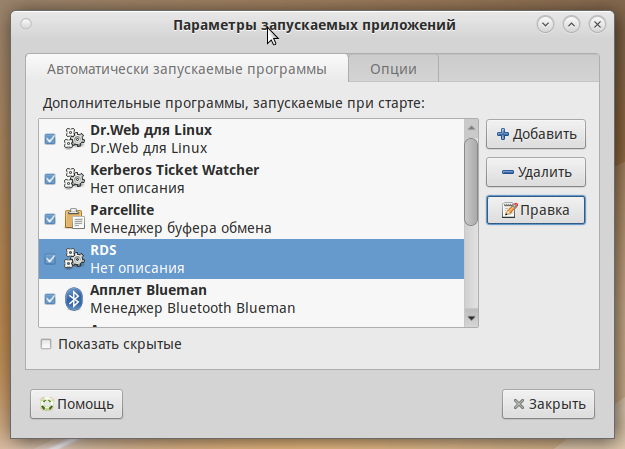
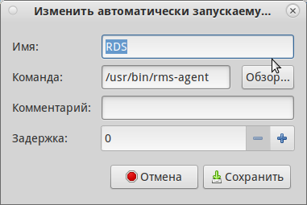